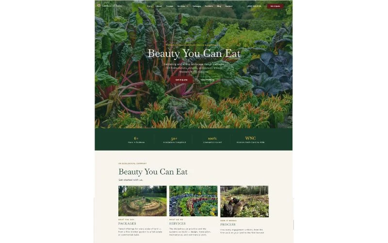
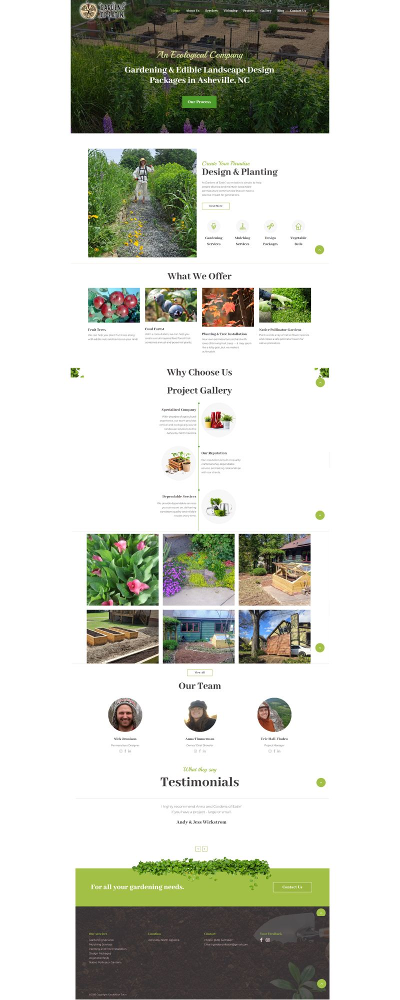
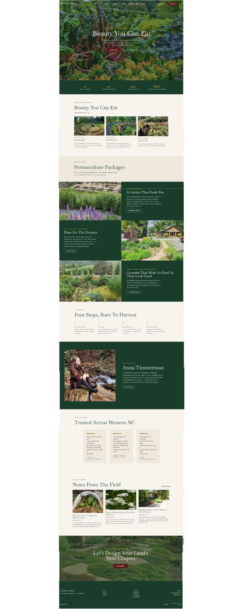

Gardens of Eatin'
Editorial Rebuild
Fractional Marketing Director · Web Redesign · Copywriting · Brand Elevation · Developer Brokering
As fractional marketing director for Gardens of Eatin', a permaculture landscaping design, installation, and maintenance company, I led a full rebuild from an underperforming Wix site into an editorial, high-end brand presence, then stayed on as the bridge between that vision and the developer who implemented it. The work is ongoing, now extending into direct mail and photography direction.

Overview
Gardens of Eatin' is a permaculture landscaping company serving Buncombe County. The existing site did not reflect the quality of the work or the caliber of client the business wanted to attract. I was brought in to reposition the brand, rebuild the site, and run an ongoing marketing effort aimed at improving digital consistency and landing more commercial clients.
The Challenge
The starting point was a cluttered, off-brand Wix site with weak copy and no clear positioning. The business needed to read as premium and editorial, not generic, and it needed a site structure and content system the team could actually maintain.
Approach
- Reworked positioning and voice to elevate the brand toward an editorial, high-end feel
- Rewrote the site copy end to end
- Designed the new site structure and mockups (built with Claude design and Claude Code)
- Brokered the build with an external WordPress developer, translating the design intent into implementation and keeping the project on track to launch
Ongoing
The engagement continues beyond the site: a direct mail campaign, photography direction to build a consistent visual library, and a broader push to strengthen digital consistency and reach commercial clients.
Why it spans all four pillars
- Business & Operations: positioning strategy, targeting commercial clients, and a maintainable content system
- Marketing & Communications: copywriting, direct mail, photography direction, and digital consistency
- Visual Design: brand elevation to an editorial, high-end feel
- System Design: site structure, CMS, and creative direction between vision and developer
Before & After


Scroll inside each window, or click to view full size.